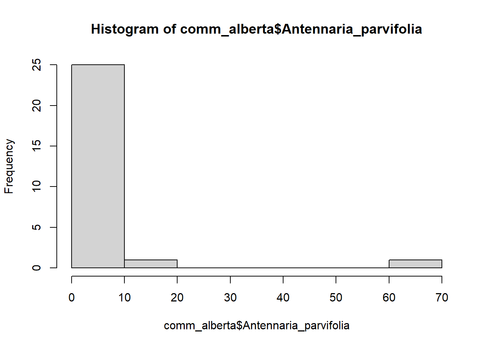

comm_alberta <- read.csv("https://raw.githubusercontent.com/ngmedina/UAMBioDivR/main/Alberta%20grassland/grassland.community.csv")Tema 3. Métodos de comparaciones
Datos de composición específica
En estas sesiones vamos a explorar índices de biodiversidad. Para ello vamos a emplear bases de datos de la abundancia de especies en herbazales de Alberta en Estados Unidos. Los datos provienen de un taller sobre análisis de la biodiversidad en R que podéis encontrar aquí
Los datos de composición específica consisten tipicamente en observaciones de la presencia o abundancia de las especies en diferentes localidades.
En el ejemplo que vamos a emplear los datos provienen de un estudio de plantas que se realizó en parcelas de 20 x 20 m. Los datos de abundancia corresponden la cobertura de cada especie en proporción al total de la parcela.
Cargar datos
Vamos a cargar los datos directamente de una página web. En R esto es muy sencillo si los datos tienen el formato adecuado. De hecho, vamos a emplear el mismo código que empleamos cuando cargamos datos desde un archivo guardado en nuestro ordenador.
Para ver el formato en el que los datos están almacenados en la nube pinchad aquí
Cargamos los datos:
y echamos un vistazo a las primeras filas para comprobar que los datos se han cargado correctamente
head(comm_alberta)[,c(1:10)] plot Antennaria_parvifolia Artemisia_cana Artemisia_frigida
1 mix-O-1 10 10 50
2 mix-O-2 0 10 50
3 mix-O-3 20 20 30
4 mix-O-4 0 0 0
5 mix-O-5 0 10 0
6 mix-O-6 0 0 60
Symphyotrichum_ericoides_var._ericoides Bouteloua_gracilis Carex_filifolia
1 10 70 80
2 10 90 30
3 10 60 60
4 0 90 90
5 0 100 100
6 0 70 100
Elymus_lanceolatus Erysimum_inconspicuum Heterotheca_villosa
1 10 20 10
2 70 0 0
3 90 0 0
4 0 0 0
5 10 0 0
6 50 0 0Análisis exploratorio de datos
Lo primero que hacemos cuando nos enfrentamos a una base de datos nueva es hacer un primer análisis exploratorio que consiste en hacer
Resumen de datos
Representación de los datos
Resumen de datos
summary(comm_alberta)[,c(1:10)] plot Antennaria_parvifolia Artemisia_cana Artemisia_frigida
Length:27 Min. : 0.000 Min. : 0.000 Min. : 0.00
Class :character 1st Qu.: 0.000 1st Qu.: 0.000 1st Qu.: 0.00
Mode :character Median : 0.000 Median : 0.000 Median :20.00
Mean : 3.704 Mean : 7.037 Mean :18.15
3rd Qu.: 0.000 3rd Qu.:10.000 3rd Qu.:30.00
Max. :70.000 Max. :50.000 Max. :60.00
Symphyotrichum_ericoides_var._ericoides Bouteloua_gracilis Carex_filifolia
Min. : 0.000 Min. : 0.00 Min. : 0.00
1st Qu.: 0.000 1st Qu.: 15.00 1st Qu.: 0.00
Median : 0.000 Median : 60.00 Median : 40.00
Mean : 1.111 Mean : 51.48 Mean : 38.52
3rd Qu.: 0.000 3rd Qu.: 85.00 3rd Qu.: 70.00
Max. :10.000 Max. :100.00 Max. :100.00
Elymus_lanceolatus Erysimum_inconspicuum Heterotheca_villosa
Min. : 0 Min. : 0.000 Min. : 0.000
1st Qu.: 10 1st Qu.: 0.000 1st Qu.: 0.000
Median : 30 Median : 0.000 Median : 0.000
Mean : 40 Mean : 1.481 Mean : 1.852
3rd Qu.: 65 3rd Qu.: 0.000 3rd Qu.: 0.000
Max. :100 Max. :20.000 Max. :20.000 Y le echamos un vistazo a la matriz para comprobar que todo es correcto
View(comm_alberta)Comprobamos las dimensiones de nuestra matriz que nos dicen el número de especies
dim(comm_alberta)[1] 27 77Representación de datos
Además, es buena idea representar histogramas de distribución de datos. Por ejemplo de las especies. Esta gráfica nos muestra que en la mayor parte de las cuadrículas Antennaria parviflora tiene un cobertura entre 0 y 10 % pero que en alguna de las cuadrículas puede llegar a ocupar el 70%
hist(comm_alberta$Antennaria_parvifolia)
Otras operaciones para explorar los datos
Podemos ver qué especie es la más abundante. Para ello tenemos que sumar los valores de las columnas. Podríamos hacerlo columna a columna. Por ejemplo, para la especie de la segunda columna que es Antennaria parviflora
colnames(comm_alberta)[2][1] "Antennaria_parvifolia"sum(comm_alberta[,2])[1] 100Si tenemos 100 especies esto implicaría repetir el código de arriba 100 veces. Sin embargo, existe una forma rápida y sintética de hacer esto mismo utilizando la función .
colsums <- colSums(comm_alberta[,-1])Además podemos ver cuál de los cuadrados tiene la mayor cobertura de especies
rowsums <- rowSums(comm_alberta[,-1])Índices de diversidad taxonómica
Hay muchas maneras de analizar la diversidad taxonómica. La más sencilla es contar el número de especies de cada unidad geográfica (en nuestro ejemplo cuadrículas). De hecho hay muchísimos índices de diversidad y bastante controversia con respecto a cuáles deberían usarse.
Si os interesa el tema tenéis algunos enlaces a páginas web y artículos interesantes sobre índices de biodiversidad aquí abajo:
https://www.nature.com/articles/35012221
https://onlinelibrary.wiley.com/doi/10.1111/oik.07202
[Ejercicio 7] Busca en internet otros paquetes de R que permitan calcular índices de diversidad taxonómica
Nosotros vamos a utilizar la librería vegan para estimar diferentes índices de diversidad
library(vegan)Warning: package 'vegan' was built under R version 4.5.1Warning: package 'permute' was built under R version 4.5.1En el código que sigue a continuación tenéis ejemplos que muestran como estimar índices de diversidad utilizando los datos de comunidad de las herbáceas de Alberta.
Primero calculamos la riqueza de especies por cada cuadrícula
## Riqueza de especies
S <- specnumber(comm_alberta[,-1]) ## rowSums(comm_alberta > 0) hace lo mismo...Y la riqueza total
## Riqueza total
Stot <- length(colnames(comm_alberta[-1]))Ahora calculamos otros índices de diversidad, el índice de Shannon es uno de los más frecuentes
H <- diversity(comm_alberta[,-1], "shannon")Pero la función nos permite calcular muchos más.
# Simpson
simp <- diversity(comm_alberta[,-1], "simpson")
# Inv simp
invsimp <- diversity(comm_alberta[,-1], "inv")
## Fisher alpha
alpha <- fisher.alpha(comm_alberta[,-1])Diversidad funcional
Sin embargo, la diversidad taxonómica no es el único aspecto de la biodiversidad. Además, también podemos cuantificar la diversidad de rasgos funcionales. De hecho, cada vez es más habitual reconocer la imporancia de este aspecto.
Para estimar la diversidad funcional vamos a emplear una base de datos de rasgos funcionales para las especies que están presentes en las cuadrículas de los datos de Alberta.
Cargar la base de datos de rasgos
traits <- read.csv("https://raw.githubusercontent.com/ngmedina/UAMBioDivR/main/Alberta%20grassland/species.traits.csv")Los rasgos que han medido en este estudio incluyen SLA, Area de las hojas, Grosor de las hojas, venación, densidad del tejido y longitud de las raíces, etc.
Hay multitud de opciones pero para el ejemplo vamos a emplear el paquete FD
library(FD)Warning: package 'FD' was built under R version 4.5.1Warning: package 'ade4' was built under R version 4.5.1Warning: package 'ape' was built under R version 4.5.1Warning: package 'geometry' was built under R version 4.5.1help(FD)fd <- dbFD(traits, comm_alberta[,-1])Error in dbFD(traits, comm_alberta[, -1]): Species labels in 'x' and 'a' need to be identical and ordered alphabetically (or simply in the same order).¿Qué nos dice el error?
Conseguir que las bases de datos estén harmonizadas y en el formato que necesitamos para las diferentes funciones es una de las tareas que más tiempo nos va a llevar cuando estamos haciendo un análisis. Tenéis que asumir desde un principio que siempre va a ser así.
En este caso tenemos que ordenar las especies en la comunidad exactamente igual en las dos matrices. Tenéis a continuacíon el código
Primero ordenamos la base de datos de las abundancias de las especies para que las columnas estén en orden alfabético
comm_alberta_ordered <- comm_alberta[,-1][,order(colnames(comm_alberta[,-1]))]Después comprobamos si el orden de las especies en la tabla de rasgos es alfabético
head(traits$species)[1] "Achillea_millefolium" "Allium_textile" "Amelanchier_alnifolia"
[4] "Androsace_occidentalis" "Antennaria_neglecta" "Antennaria_parvifolia" Además, la función necesita que los nombres de las filas sean los de las especies
rownames(traits) <- traits$species
traits <- traits[,-1]Ahora ya podemos calcular el índice de diversidad funcional
fd <- dbFD(traits, comm_alberta_ordered)FRic: Dimensionality reduction was required. The last 4 PCoA axes (out of 9 in total) were removed.
FRic: Quality of the reduced-space representation = 0.9290428 Diversidad filogenética
Del mismo modo que hay varias formas de calcular la diversidad funcional también hay varias maneras de calcular la diversidad filogenética. Nosotros nos vamos a centrar tan solo en una de ellas, la diversidad filogenética de Faith.
La diversidad filogenética de Faith (PD) es una medida de biodiversidad que resulta de sumar la longitud de todas las ramas de las especies en un árbol filogenético.
Vamos a cargar el árbol filogenético de los datos de Alberta. Los análisis los haremos con la librería picante
library(picante)Warning: package 'picante' was built under R version 4.5.1tree_alberta <- read.tree("https://raw.githubusercontent.com/ngmedina/UAMBioDivR/main/Alberta%20grassland/grassland.phylogeny.newick")pd <- picante::pd(comm_alberta_ordered, tree_alberta)Hagamos un primer análisis exploratorio de la relación entre la riqueza, la diversidad filogenética y la funcional
pairs(cbind(S, Fric =fd$FRic, FEve = fd$FEve, FDiv = fd$FDiv, FDis = fd$FDis, PD = pd$PD ), pch="+", col="blue")